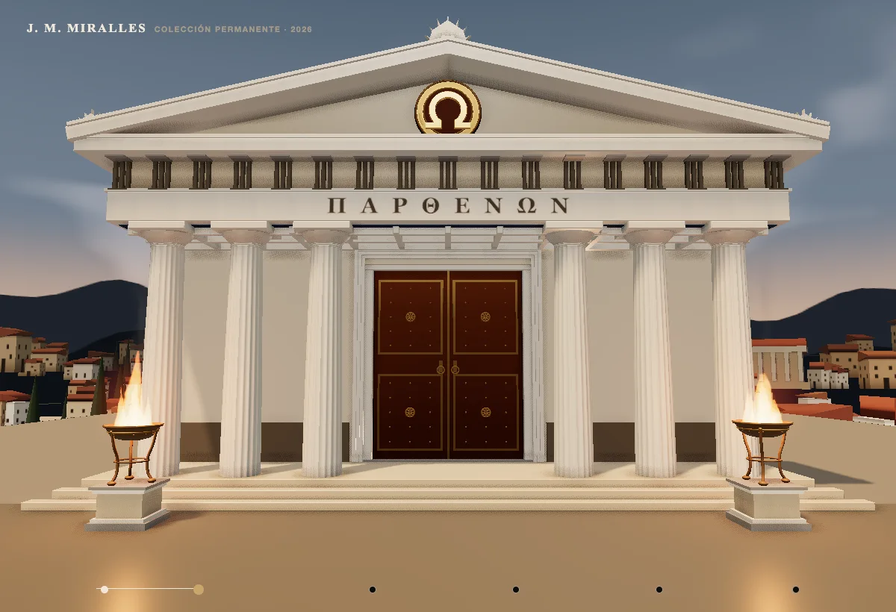
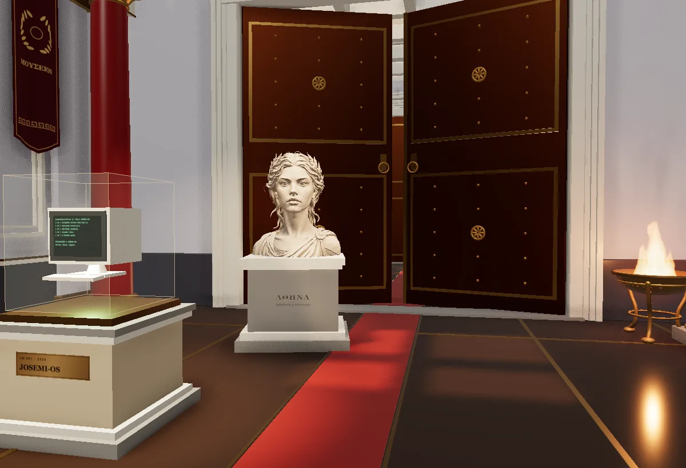
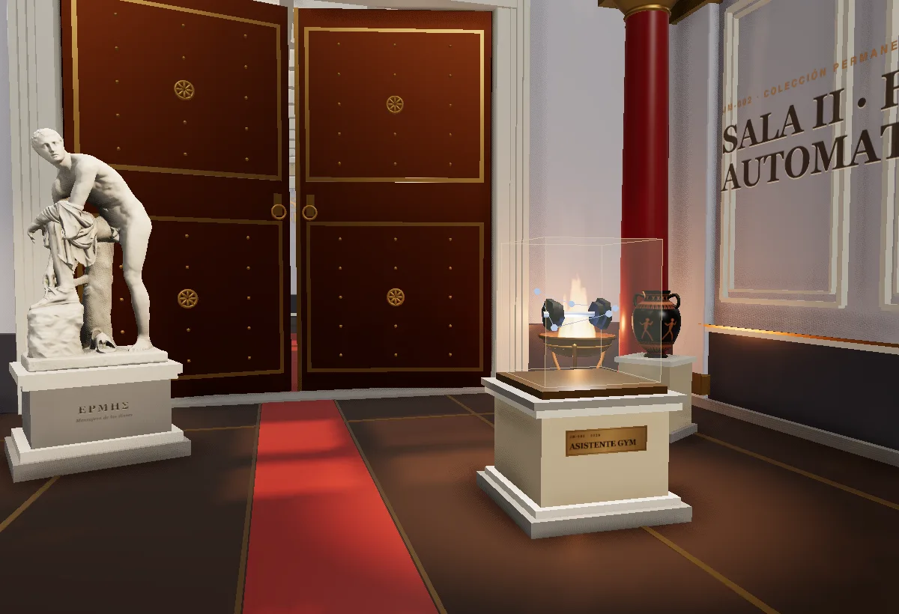
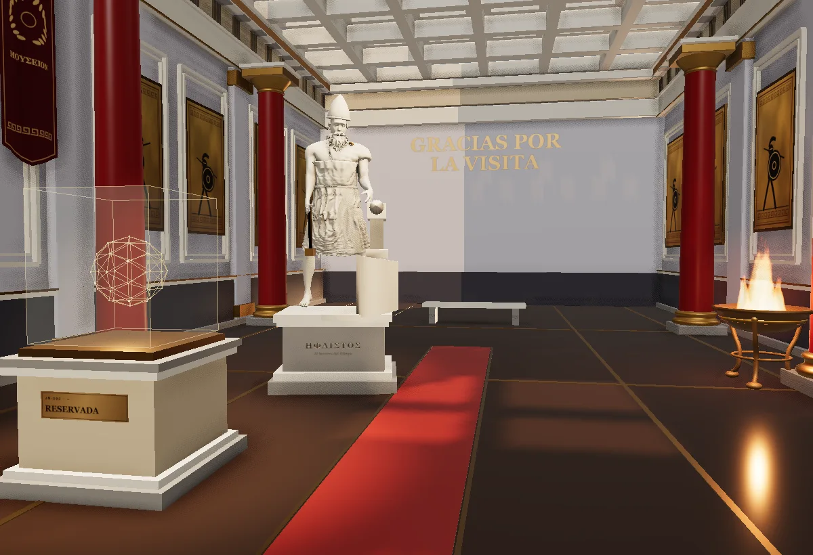

El pórtico

La escalinata y las columnas dóricas dan paso a las tres salas del museo.
Activar la visita 3DAtenea

El busto de caliza preside la sala de JOSEMI-OS, mi escritorio web con terminal y Arcade.
Ver el proyecto · Ver el busto de cerca · Activar la visita 3DHermes

El mensajero de los dioses acompaña a mi prototipo de asistente de gimnasio con WhatsApp y n8n.
Ver el proyecto · Activar la visita 3DHefesto

La vitrina del herrero del Olimpo está reservada para mi próximo proyecto.
Ver el proyecto · Activar la visita 3D